Projects
- All Applications
- Aerospace
- Biosensing
- Built Environment
- Logistics
- Robotics
- Societal Systems
- Training
15 items
Experience / Program reflection / Designing for Resilience
National Academy of Engineering Grand Challenges Scholars Program (GCSP) at ASU
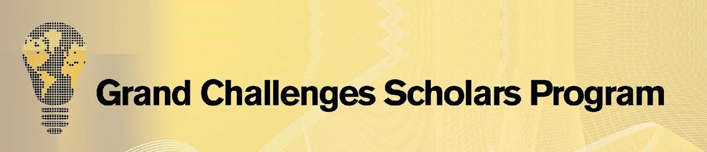
My reflection on four years in the program (GCSP), year by year. I describe what its courses, projects, and research experience taught me, from stakeholder analysis and market fit to algorithmic bias, circular-economy design, and aid effectiveness. The Future Solutions Poster is my first-year (FSE 150) team's Concept of Operations proposal for earthquake prediction software paired with exoskeleton augmentation for first responders. In its societal-challenges deliverable, I wrote the passages on over-reliance on AI and on who commands rescue operations.
Reflection pageASU Engineering News profileFuture Solutions Poster
Project / Hackathon / Designing for Safety
1st Place, Critical Infrastructure Hackathon
Issued by Department of Homeland Security Centers for Excellence / Devils Invent · Feb 2022
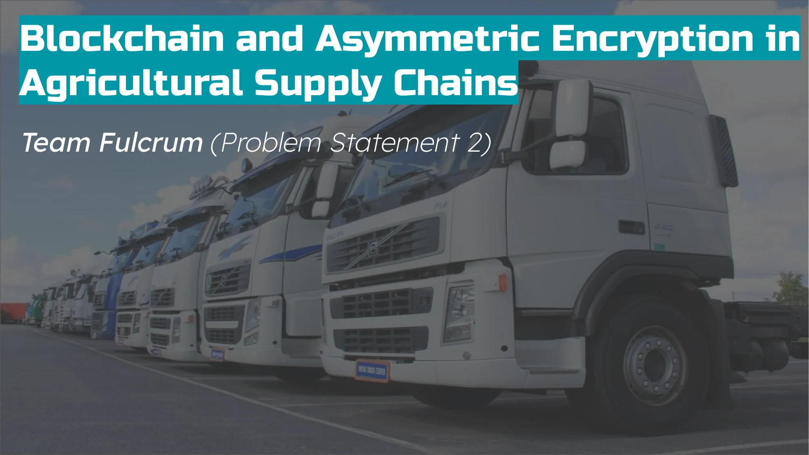
Our six-person team proposed a blockchain-based approach to agricultural supply-chain traceability. I contributed stakeholder and value-proposition analysis and helped develop the Figma demonstration. We won first place in our category. I also designed the team's logo, which appears on the demonstration's login screen.
DHS S&T Hackathon Addresses Emerging Threats to Critical InfrastructureFigma demo
Research / Coauthored conference paper / Designing for Safety
Experimental design for structural safety
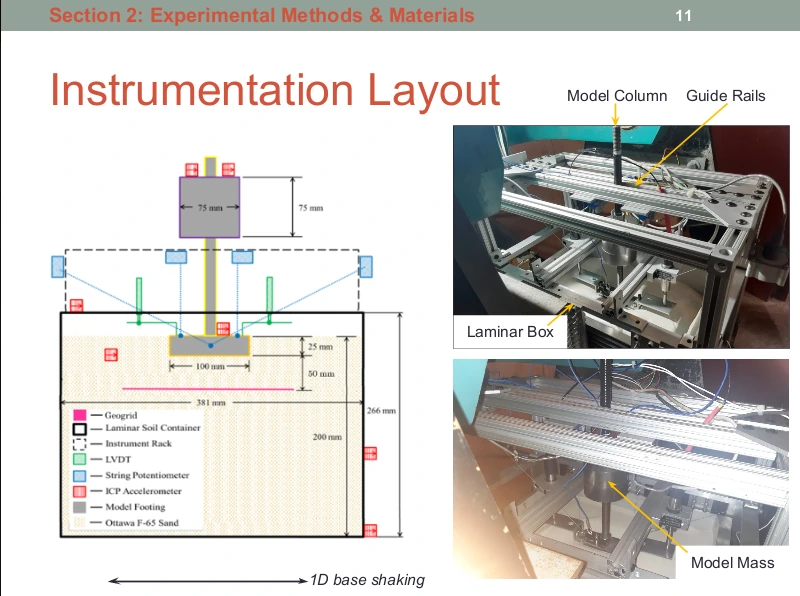
I coauthored the 2024 conference paper “Rocking foundations on geosynthetic-improved sand” following my NSF-funded undergraduate research at UC San Diego. My contributions included experimental design, characterization of 3D-printed reinforcement materials, and MATLAB-based research visualization for centrifuge-model testing.
Project / Course proposal / Designing for Resilience
Off-grid modular homes
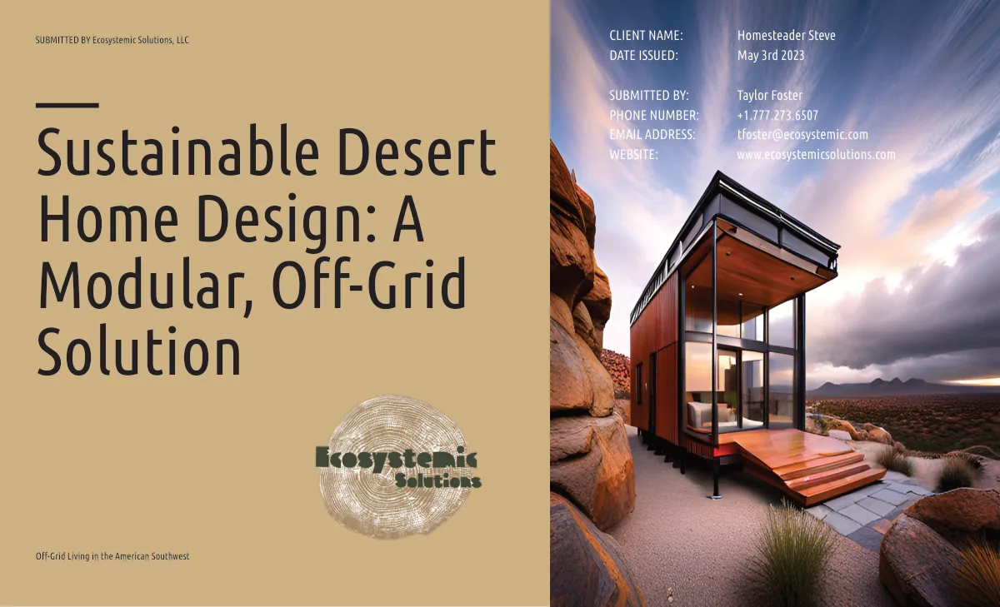
In DSC 394 (Design Entrepreneurship and Society), I served as the Green Technology Researcher on a team proposal for climate-adaptive housing in the American Southwest, addressing present and projected climate conditions, documented in my GCSP Portfolio, linked below. Building on the team's original concept, I independently developed a conceptual product design brief for a modular, off-grid desert home in IND 354 (Principles of Product Design). The brief reflects an early exploration of AI-assisted concept visualization and climate-responsive product design, made while also discovering the latest AI visual generation capabilities as of 2023.
Case study / Hackathon / Designing for Resilience
Honorable Mention, SpaceHACK for Sustainability
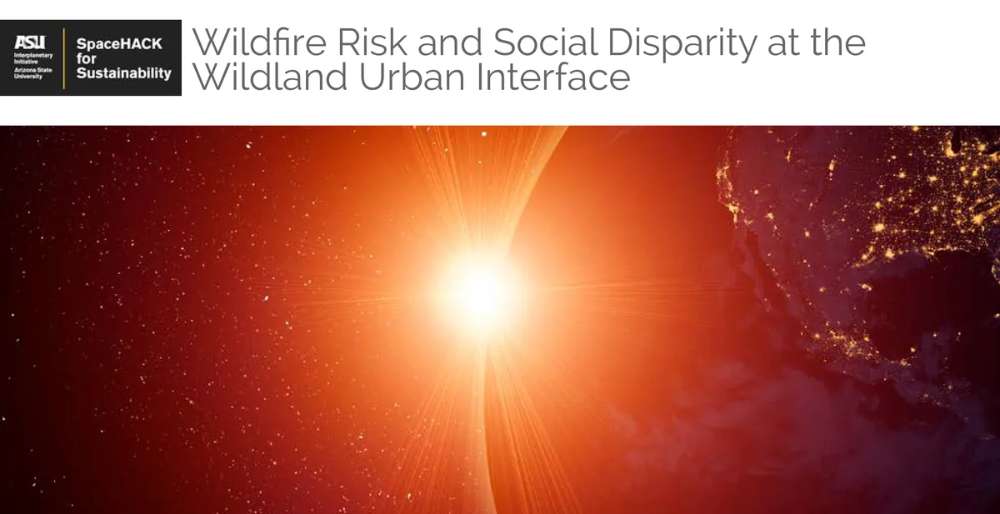
Issued by Interplanetary Initiative at ASU · Mar 2023
Associated with Arizona State University
I joined a four-person team in the 2023 SpaceHACK for Sustainability track on wildfire risk and social disparity at the wildland-urban interface. Using Google Earth Engine, I examined satellite-derived wildfire observations to inform our exploratory maps and our proposal for selective forest thinning and biomass reuse. Our team received an Honorable Mention.
Experience / Internship / Designing for Safety
Safety and Operations Intern
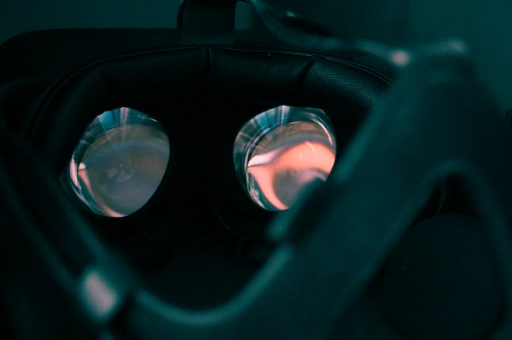
Image: FloppaIngénieur, CC BY 4.0, via Wikimedia Commons. Resized and converted to WebP.
During an energy-sector internship, I developed safety maps and digital inspection checklists. In 2023, as my first assignment, I assessed the usability of an existing VR lockout/tagout training, promoted its use, and researched alternative vendors. I later collaborated with an external vendor to scope a separate proposed VR training application for power plant operators, contributing to its instructional requirements.
Project / Prototyping role / Designing for Ventures
Countdown CES (Circular Economy Solutions)
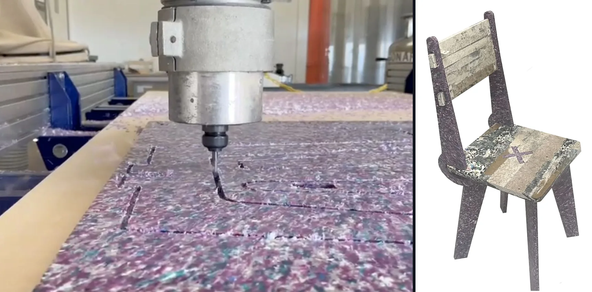
Through ASU's Engineering Projects in Community Service (EPICS), our team designed recycled high-density polyethylene (HDPE) school furniture with Countdown CES for schools in Ghana. As prototyping lead, I operated computer numerical control (CNC) equipment and tested furniture joints to inform fit and manufacturing decisions.
EPICS project pageFall 2023 reflectionSpring 2024 reflection
Case study / Course design / Trust as Infrastructure
CrisisCourier UAS operator displays
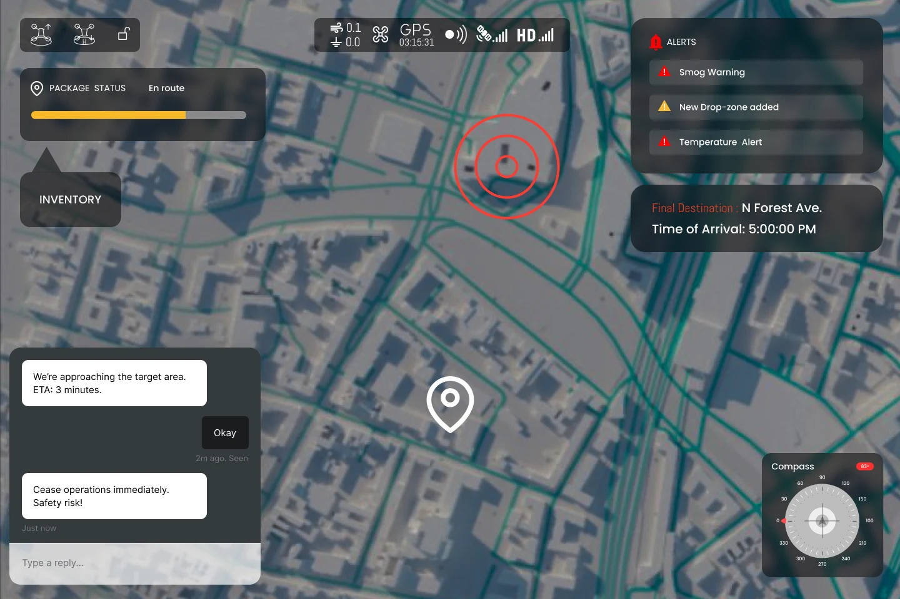
In a six-person HSE 542 team (2024), I helped design uncrewed aircraft system (UAS) operator displays for disaster relief. I contributed to the shift toward cargo delivery, operator-role requirements, pilot-control sketches, and alert design. Our concept allocated routine flight tasks to automation while retaining human decision authority.
Project / Course evaluation / Knowledge as Infrastructure
Learning-science review of an online satellite course
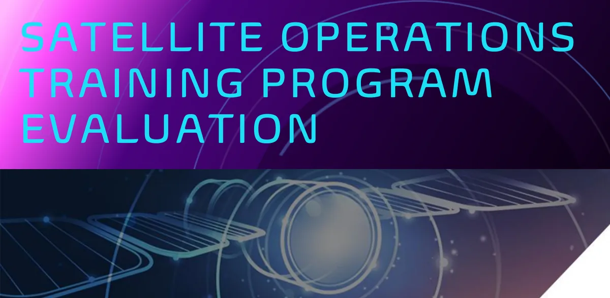
HSE 427 (Design for Learning) project (2024) evaluating ASU's online Introduction to Satellite Operations program. I assessed its instruction structure, feedback, and learner motivation against learning-science criteria, then recommended mixed practice, delayed feedback, and retention and transfer tests. An expert review; no learners were tested.
Project / Research role / Trust as Infrastructure
Project ENTERPRISE Annotated Bibliography
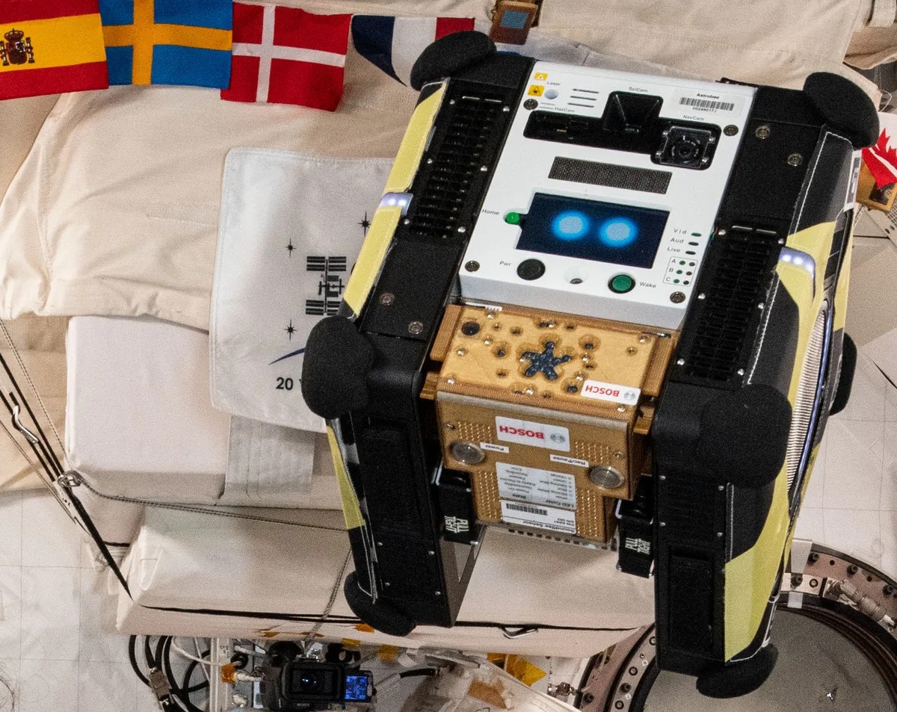
Illustrative image: Astrobee free-flying robot on the International Space Station. Credit: NASA.
Project ENTERPRISE (Enhanced Networks for Trusted Exploration and Reliability with Predictive Resilient Intelligent Systems for Exploration) examined human-robot collaboration for space exploration by addressing technical and non-technical challenges associated with distributed teams. In ASU's Interplanetary Initiative Undergraduate Research Scholars Program (Fall 2024), my role in Project ENTERPRISE was to develop an annotated bibliography for the team's roadmap proposal, featuring cognitive science topics from the Human Systems Engineering program.
Project / Course design / Knowledge as Infrastructure
Insight Enclave
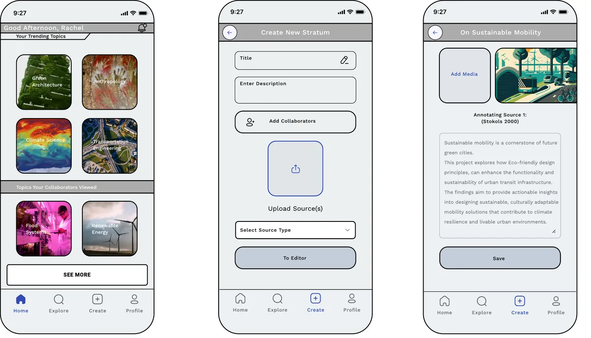
HSE 429 (Product Design and Evaluation) project (2024): an app concept where citizen scientists publish “strata,” annotated research notes whose credibility reflects the quality of their sources. I wrote the user requirements, prototyped the core flow in Figma, and ran a usability test with five students that traced most confusion to drag-and-drop organizing.
Project / Instructional role / Designing for Ventures
WithKiP Robotics Curriculum and Teacher-Led AI Support
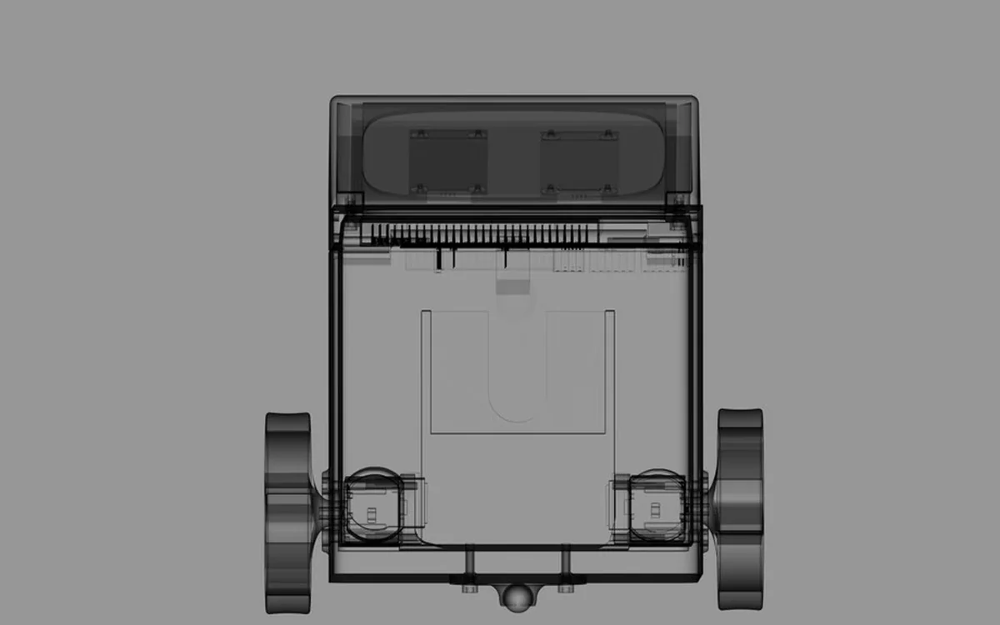
WithKiP Robotics/STEM Learning Platform, Former Luminosity Lab Project. My contribution to this team product is instructional design grounded in learning science. It includes seven teacher guides, an audit against the Computer Science Teachers Association (CSTA) Level 1B standards, before their 2026 revisions, a Next Generation Science Standards (NGSS) activity alignment, and the pedagogical specification, system prompt, and teacher feedback instrument for a teacher-led AI assistant. I also researched grant funding and marketing statistics for the team.
Venture pageWithKiP on LinkedInNGSS standardsCSTA standards (2017)
Project / Capstone review / Designing for Safety
Human-Robot Collaboration in Construction
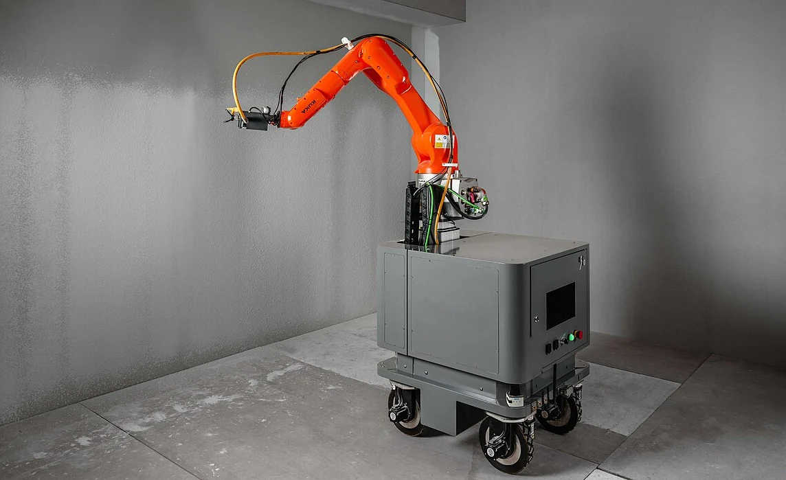
Illustrative image: mobile construction robot in an unfinished interior. Credit: Willywangpowei, CC BY 4.0, via Wikimedia Commons; cropped, logo removed.
This thematic literature review examines the safety challenges of human-robot collaboration in architecture, engineering, and construction (AEC). Drawing on 22 peer-reviewed studies, it explores how physical hazards, cognitive workload, trust, and worker perceptions influence the safe integration of collaborative robots into construction environments. The review also considers immersive training technologies and organizational barriers to adoption, highlighting the importance of human-centered design in developing safer and more effective human-robot teams.
Project / Research role / Designing for Ventures
The BlueMatter Project
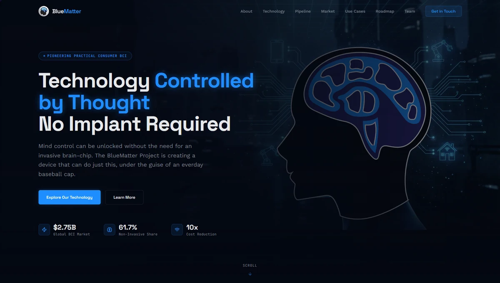
Luminosity Lab research project on a discreet, non-invasive electroencephalography (EEG) brain-computer interface. As Human Systems and Algorithms Research Lead, I summarized the research on reading EEG brain signals, including machine learning and analysis methods inspired by dynamical systems theory. I also built and deployed much of the website's initial front end with the help of AI coding agents (Manus and ChatGPT's Codex).
Project / Strategist role / Designing for Ventures
Attune: A Lightweight Pre-fitting EMG Training Platform
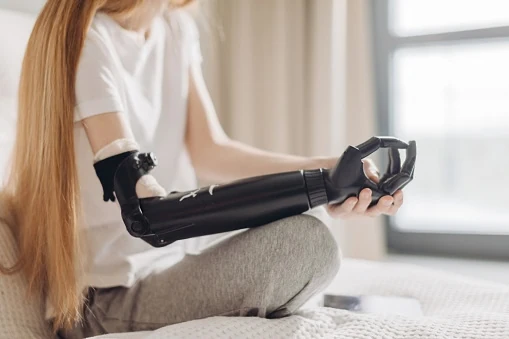
At the Luminosity Lab, I contributed research and product strategy for a proposed pre-fitting training platform using electromyography (EMG) and immersive environments. My work included partner and market research, motor-learning synthesis, and contributions to the team's white paper. The project remains in development and is not validated.
Case study / Course analysis / Knowledge as Infrastructure
Software and Automation Coding in UAS Reports: A Reproducible Analysis of NASA Aviation Safety Reporting System (ASRS) Incident Reports
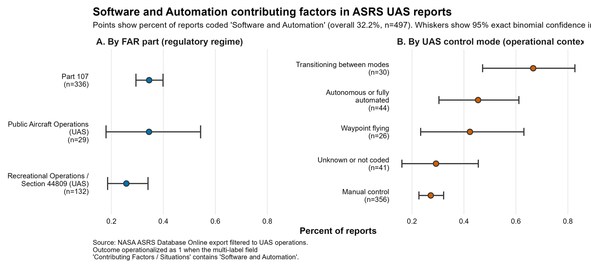
I analyzed 497 NASA Aviation Safety Reporting System (ASRS) uncrewed aircraft system (UAS) reports using R, comparing the share coded “Software and Automation” across regulatory regimes and control modes. I visualized subgroup proportions with 95% exact binomial confidence intervals while keeping the interpretation descriptive.
Case study / Proposal stage / Trust as Infrastructure
Observer paradigm for robot-teammate trust
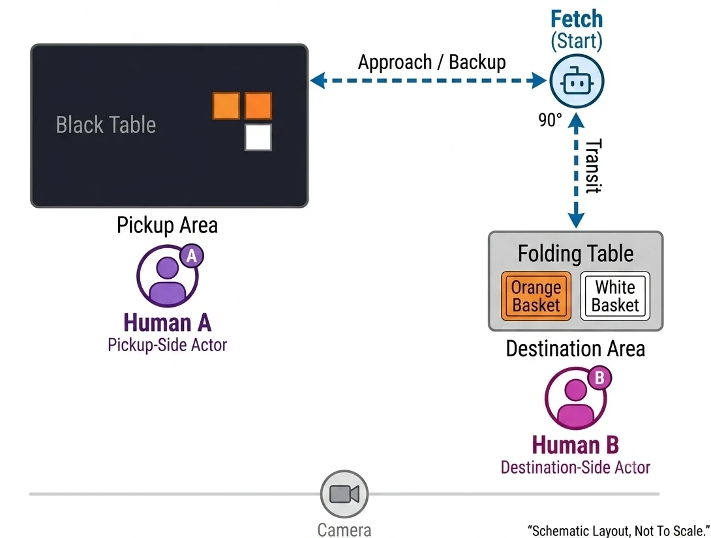
I designed an observer study on decision rights in human-robot teams, developed its survey and analysis plan, and prepared robot-control scripts and video-stimulus materials. Data collection has not begun.